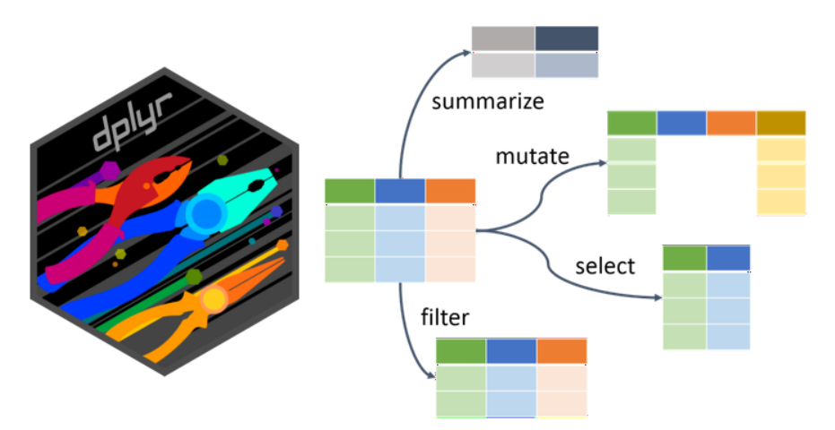

library(tidyverse)
library(readxl)2 Data Manipulation
In this chapter, we will try to explore the data, prepare subsets with only selected variables and filter them to only defined cases. We will prepare new variables and rearrange the data according to them. We will also further train importing and exporting the data.
2.1. Introducing dplyr
The term data manipulation might sound a bit tricky. However, it does not mean we plan to show you how to cheat and make better results. It just means we want to show you how to easily handle the data, prepare them in the form you need. The functions for basic data handling, namely select, filter, mutate, arrange, slice come from the tidyverse package called dplyr. Do you remember how to find out more about the package? If nothing else you can try “?dplyr” which actually gives you more hints where to look further.

Note that many of these operations can be done also in some table editors (eg. Excel) before importing to R. However, the effort and time demands would be much higher and would be increasing enormously with the size of the dataset. In contrast, in R you can change and rerun the steps in one pipeline and the data will be immediately ready for next analyses.
We will need following libraries
and the forest dataset. Again I will import the data just once and use the pipe to test the functions/effects without actually changing the data
data <- read_excel("data/forest_understory/Axmanova-Forest-understory-diversity-analyses.xlsx")
names(data) [1] "PlotID" "ForestType" "ForestTypeName" "Herbs"
[5] "Juveniles" "CoverE1" "Biomass" "Soil_depth_categ"
[9] "pH_KCl" "Slope" "Altitude" "Canopy_E3"
[13] "Radiation" "Heat" "TransDir" "TransDif"
[17] "TransTot" "EIV_light" "EIV_moisture" "EIV_soilreaction"
[21] "EIV_nutrients" "TWI" 2.2 Select
Select extracts columns/variables based on their names or position. It is important to realise the difference between select and filter. Select is used to select the names of variables I want to keep in the dataset, while filter applies to rows depending on their values.
You can select by naming the variables. Here you would appreciate the tidy style of names! Tidy names means no need to use parentheses :-)
data %>%
select(PlotID, ForestType, ForestTypeName) # A tibble: 65 × 3
PlotID ForestType ForestTypeName
<dbl> <dbl> <chr>
1 1 2 oak hornbeam forest
2 2 1 oak forest
3 3 1 oak forest
4 4 1 oak forest
5 5 1 oak forest
6 6 1 oak forest
7 7 1 oak forest
8 8 2 oak hornbeam forest
9 9 2 oak hornbeam forest
10 10 1 oak forest
# ℹ 55 more rowsYou can also select by position. However, be sure it will stay the same after all the changes you might do with the data.
data %>%
select(1:3)# A tibble: 65 × 3
PlotID ForestType ForestTypeName
<dbl> <dbl> <chr>
1 1 2 oak hornbeam forest
2 2 1 oak forest
3 3 1 oak forest
4 4 1 oak forest
5 5 1 oak forest
6 6 1 oak forest
7 7 1 oak forest
8 8 2 oak hornbeam forest
9 9 2 oak hornbeam forest
10 10 1 oak forest
# ℹ 55 more rowsSometimes you decide you want to get rid of some variables. Either you can name all the others which you want to keep, or you can remove those unwanted with minus sign. If it is one variable it is easy “select(-xx)”, if two or more, you have to use “select(-c(xx, xy))”
data %>%
select(-c(ForestType,ForestTypeName))# A tibble: 65 × 20
PlotID Herbs Juveniles CoverE1 Biomass Soil_depth_categ pH_KCl Slope Altitude
<dbl> <dbl> <dbl> <dbl> <dbl> <dbl> <dbl> <dbl> <dbl>
1 1 26 12 20 12.8 5 5.28 4 412
2 2 13 3 25 9.9 4.5 3.24 24 458
3 3 14 1 25 15.2 3 4.01 13 414
4 4 15 5 30 16 3 3.77 21 379
5 5 13 1 35 20.7 3 3.5 0 374
6 6 16 3 60 46.4 6 3.8 10 380
7 7 17 5 70 49.2 7 3.48 6 373
8 8 21 1 70 48.7 5 3.68 0 390
9 9 15 4 15 13.8 3.5 4.24 38 255
10 10 14 4 75 79.1 5 4.01 13 340
# ℹ 55 more rows
# ℹ 11 more variables: Canopy_E3 <dbl>, Radiation <dbl>, Heat <dbl>,
# TransDir <dbl>, TransDif <dbl>, TransTot <dbl>, EIV_light <dbl>,
# EIV_moisture <dbl>, EIV_soilreaction <dbl>, EIV_nutrients <dbl>, TWI <dbl>You can also define range of variables between two of them.
data %>%
select(PlotID:ForestTypeName)# A tibble: 65 × 3
PlotID ForestType ForestTypeName
<dbl> <dbl> <chr>
1 1 2 oak hornbeam forest
2 2 1 oak forest
3 3 1 oak forest
4 4 1 oak forest
5 5 1 oak forest
6 6 1 oak forest
7 7 1 oak forest
8 8 2 oak hornbeam forest
9 9 2 oak hornbeam forest
10 10 1 oak forest
# ℹ 55 more rowsOr you can combine the approaches listed above
data %>%
select (PlotID, 3:6)# A tibble: 65 × 5
PlotID ForestTypeName Herbs Juveniles CoverE1
<dbl> <chr> <dbl> <dbl> <dbl>
1 1 oak hornbeam forest 26 12 20
2 2 oak forest 13 3 25
3 3 oak forest 14 1 25
4 4 oak forest 15 5 30
5 5 oak forest 13 1 35
6 6 oak forest 16 3 60
7 7 oak forest 17 5 70
8 8 oak hornbeam forest 21 1 70
9 9 oak hornbeam forest 15 4 15
10 10 oak forest 14 4 75
# ℹ 55 more rowsSelect can be also used in combination with stringr package to identify the pattern in the names: try several options: starts_with, ends_with or more general one contains
data %>%
select (PlotID, starts_with("EIV"))# A tibble: 65 × 5
PlotID EIV_light EIV_moisture EIV_soilreaction EIV_nutrients
<dbl> <dbl> <dbl> <dbl> <dbl>
1 1 5 4.38 6.68 4.31
2 2 4.71 4.64 4.67 3.69
3 3 4.36 4.7 4.8 3.55
4 4 5.26 4.38 5.53 3.56
5 5 6.14 4 5.33 3.46
6 6 6.19 4.35 6.75 5.06
7 7 6.19 4.25 6.09 4.33
8 8 5.29 4.6 5.07 4.12
9 9 5.47 4.36 5.46 3.5
10 10 6.53 3.86 6 3
# ℹ 55 more rowsSelect can effectively help you organise the data. Imagine you have a workflow where you need only some variables, but in a certain sequence. And you import the data from different people, or years. With the use of select in your script you can order the variables always in the same way e.g. SampleID, ForestType, SpeciesNr, Productivity, even during import. And you can also rename the variables using select, to get exactly what you need. Here the new name is at the left, as in rename.
data %>%
select(SampleID=PlotID, ForestCode=ForestType, SpeciesNr=Herbs, Productivity=Biomass) # A tibble: 65 × 4
SampleID ForestCode SpeciesNr Productivity
<dbl> <dbl> <dbl> <dbl>
1 1 2 26 12.8
2 2 1 13 9.9
3 3 1 14 15.2
4 4 1 15 16
5 5 1 13 20.7
6 6 1 16 46.4
7 7 1 17 49.2
8 8 2 21 48.7
9 9 2 15 13.8
10 10 1 14 79.1
# ℹ 55 more rows2.3 Arrange
This function keeps the same variables just reorders the rows according to the values we select. To see the changes at a first glance I will first select only few variables.
data <- read_excel("data/forest_understory/Axmanova-Forest-understory-diversity-analyses.xlsx")
data <- data %>% select(PlotID, ForestType, ForestTypeName, Biomass)Now I decided to arrange the data by Forest type
data %>%
arrange(ForestTypeName)# A tibble: 65 × 4
PlotID ForestType ForestTypeName Biomass
<dbl> <dbl> <chr> <dbl>
1 101 4 alluvial forest 91.1
2 103 4 alluvial forest 114.
3 104 4 alluvial forest 188.
4 110 4 alluvial forest 126.
5 111 4 alluvial forest 84.8
6 113 4 alluvial forest 74.5
7 125 4 alluvial forest 123.
8 127 4 alluvial forest 176
9 129 4 alluvial forest 100.
10 131 4 alluvial forest 163.
# ℹ 55 more rowsWe can also decide to arrange the data from the highest value to the lowest, i.e. in descending order
data %>%
arrange(desc(Biomass))# A tibble: 65 × 4
PlotID ForestType ForestTypeName Biomass
<dbl> <dbl> <chr> <dbl>
1 132 4 alluvial forest 287.
2 130 3 ravine forest 238
3 104 4 alluvial forest 188.
4 127 4 alluvial forest 176
5 131 4 alluvial forest 163.
6 110 4 alluvial forest 126.
7 125 4 alluvial forest 123.
8 128 3 ravine forest 121.
9 103 4 alluvial forest 114.
10 124 2 oak hornbeam forest 102.
# ℹ 55 more rowsOr we can arrange according to more variables. Here the forest type goes first, as I decided it is the most important grouping variable. Within each type I want to see the rows/cases ordered by biomass values.
data %>%
arrange(ForestType, ForestTypeName, desc(Biomass)) %>% print(n=30)# A tibble: 65 × 4
PlotID ForestType ForestTypeName Biomass
<dbl> <dbl> <chr> <dbl>
1 10 1 oak forest 79.1
2 7 1 oak forest 49.2
3 6 1 oak forest 46.4
4 44 1 oak forest 34.1
5 82 1 oak forest 33.9
6 28 1 oak forest 29.7
7 42 1 oak forest 21.5
8 5 1 oak forest 20.7
9 81 1 oak forest 20.6
10 4 1 oak forest 16
11 47 1 oak forest 15.5
12 3 1 oak forest 15.2
13 31 1 oak forest 14.9
14 100 1 oak forest 13.5
15 2 1 oak forest 9.9
16 11 1 oak forest 7.4
17 124 2 oak hornbeam forest 102.
18 120 2 oak hornbeam forest 98.5
19 121 2 oak hornbeam forest 84.7
20 126 2 oak hornbeam forest 72.9
21 18 2 oak hornbeam forest 72.2
22 118 2 oak hornbeam forest 66.2
23 99 2 oak hornbeam forest 64.8
24 109 2 oak hornbeam forest 60.7
25 112 2 oak hornbeam forest 58.4
26 102 2 oak hornbeam forest 57.4
27 117 2 oak hornbeam forest 54.7
28 8 2 oak hornbeam forest 48.7
29 86 2 oak hornbeam forest 46.9
30 87 2 oak hornbeam forest 42.9
# ℹ 35 more rowsTo see more rows of the resulting table, I specified their number using print function.
2.4 Distinct
Distinct is a function that takes your data and remove all the duplicate rows, keeping only the unique ones. There are many cases where you will really appreciate this elegant and easy way. For example, I want a list of unique PlotIDs, unique combinations of two categories etc. Here I want to prepare list of forest types codes and names.
data %>%
arrange(ForestType) %>%
select(ForestType, ForestTypeName) %>%
distinct()# A tibble: 4 × 2
ForestType ForestTypeName
<dbl> <chr>
1 1 oak forest
2 2 oak hornbeam forest
3 3 ravine forest
4 4 alluvial forest The same can be done also if I skip the select tool, because distinct works more like select+distinct.
data %>%
arrange(ForestType) %>%
distinct(ForestType, ForestTypeName)# A tibble: 4 × 2
ForestType ForestTypeName
<dbl> <chr>
1 1 oak forest
2 2 oak hornbeam forest
3 3 ravine forest
4 4 alluvial forest Sometimes, distinct can be used also when importing data just to remove forgotten duplicate rows: data<- read_csv… %>% distinct().
2.5 Filter and slice
When we have a large dataset, we sometimes need to create a subset of the rows/cases. First we have to define upon which variable we are going to filter the rows (e.g. Forest type, soil pH…) and which values are acceptable and which are not.
In this first example I use categorical variable and I want to match exact value, so I have to use ==
data %>%
filter(ForestTypeName =="alluvial forest")# A tibble: 11 × 4
PlotID ForestType ForestTypeName Biomass
<dbl> <dbl> <chr> <dbl>
1 101 4 alluvial forest 91.1
2 103 4 alluvial forest 114.
3 104 4 alluvial forest 188.
4 110 4 alluvial forest 126.
5 111 4 alluvial forest 84.8
6 113 4 alluvial forest 74.5
7 125 4 alluvial forest 123.
8 127 4 alluvial forest 176
9 129 4 alluvial forest 100.
10 131 4 alluvial forest 163.
11 132 4 alluvial forest 287. Or I might define a list of values, especially for categorical variables. And the filter function will try to find rows with values exactly matching those %in% the list.
data %>%
filter(ForestTypeName %in% c("alluvial forest", "ravine forest"))# A tibble: 21 × 4
PlotID ForestType ForestTypeName Biomass
<dbl> <dbl> <chr> <dbl>
1 101 4 alluvial forest 91.1
2 103 4 alluvial forest 114.
3 104 4 alluvial forest 188.
4 105 3 ravine forest 65.5
5 106 3 ravine forest 33.6
6 108 3 ravine forest 82.3
7 110 4 alluvial forest 126.
8 111 4 alluvial forest 84.8
9 113 4 alluvial forest 74.5
10 114 3 ravine forest 71.5
# ℹ 11 more rowsIf I filter continuous variable, I can work with thresholds. For example, here the biomass of herb layer is measured in g/m2 and I want only those rows/cases where the biomass values are higher than 80.
data <- read_excel("data/forest_understory/Axmanova-Forest-understory-diversity-analyses.xlsx")
data %>%
filter(Biomass > 80) #[g/m2]# A tibble: 17 × 22
PlotID ForestType ForestTypeName Herbs Juveniles CoverE1 Biomass
<dbl> <dbl> <chr> <dbl> <dbl> <dbl> <dbl>
1 101 4 alluvial forest 28 6 90 91.1
2 103 4 alluvial forest 35 5 80 114.
3 104 4 alluvial forest 25 11 85 188.
4 108 3 ravine forest 28 7 70 82.3
5 110 4 alluvial forest 37 4 95 126.
6 111 4 alluvial forest 26 10 85 84.8
7 120 2 oak hornbeam forest 36 6 75 98.5
8 121 2 oak hornbeam forest 30 12 80 84.7
9 122 3 ravine forest 29 6 60 102.
10 124 2 oak hornbeam forest 34 15 75 102.
11 125 4 alluvial forest 25 8 95 123.
12 127 4 alluvial forest 53 6 0 176
13 128 3 ravine forest 20 4 70 121.
14 129 4 alluvial forest 31 7 85 100.
15 130 3 ravine forest 18 5 85 238
16 131 4 alluvial forest 59 3 95 163.
17 132 4 alluvial forest 60 7 90 287.
# ℹ 15 more variables: Soil_depth_categ <dbl>, pH_KCl <dbl>, Slope <dbl>,
# Altitude <dbl>, Canopy_E3 <dbl>, Radiation <dbl>, Heat <dbl>,
# TransDir <dbl>, TransDif <dbl>, TransTot <dbl>, EIV_light <dbl>,
# EIV_moisture <dbl>, EIV_soilreaction <dbl>, EIV_nutrients <dbl>, TWI <dbl>Sometimes you might find it useful to filter something out, rather than specifying what should stay. This is done by the exclamation mark as you can see below.
data %>%
filter(!is.na(Juveniles))# A tibble: 65 × 22
PlotID ForestType ForestTypeName Herbs Juveniles CoverE1 Biomass
<dbl> <dbl> <chr> <dbl> <dbl> <dbl> <dbl>
1 1 2 oak hornbeam forest 26 12 20 12.8
2 2 1 oak forest 13 3 25 9.9
3 3 1 oak forest 14 1 25 15.2
4 4 1 oak forest 15 5 30 16
5 5 1 oak forest 13 1 35 20.7
6 6 1 oak forest 16 3 60 46.4
7 7 1 oak forest 17 5 70 49.2
8 8 2 oak hornbeam forest 21 1 70 48.7
9 9 2 oak hornbeam forest 15 4 15 13.8
10 10 1 oak forest 14 4 75 79.1
# ℹ 55 more rows
# ℹ 15 more variables: Soil_depth_categ <dbl>, pH_KCl <dbl>, Slope <dbl>,
# Altitude <dbl>, Canopy_E3 <dbl>, Radiation <dbl>, Heat <dbl>,
# TransDir <dbl>, TransDif <dbl>, TransTot <dbl>, EIV_light <dbl>,
# EIV_moisture <dbl>, EIV_soilreaction <dbl>, EIV_nutrients <dbl>, TWI <dbl>Specific alternative to filter is slice function. Let’s say I want to get top 3 rows/cases/vegetation samples with the highest numbers of recorded juveniles. So I can arrange the values and find out the threshold and filter for the values above it. Or I can use slice_max to do the job for me.
data %>%
filter(!is.na(Juveniles)) %>%
slice_max(Juveniles, n = 3) # A tibble: 3 × 22
PlotID ForestType ForestTypeName Herbs Juveniles CoverE1 Biomass
<dbl> <dbl> <chr> <dbl> <dbl> <dbl> <dbl>
1 124 2 oak hornbeam forest 34 15 75 102.
2 112 2 oak hornbeam forest 32 14 60 58.4
3 119 2 oak hornbeam forest 63 14 50 36.6
# ℹ 15 more variables: Soil_depth_categ <dbl>, pH_KCl <dbl>, Slope <dbl>,
# Altitude <dbl>, Canopy_E3 <dbl>, Radiation <dbl>, Heat <dbl>,
# TransDir <dbl>, TransDif <dbl>, TransTot <dbl>, EIV_light <dbl>,
# EIV_moisture <dbl>, EIV_soilreaction <dbl>, EIV_nutrients <dbl>, TWI <dbl>Tip: try slice_min if you need the lowest values.
2.6 Mutate
Mutate adds new variables that are functions of existing variables. It can also overwrite the original variable e.g. round the values.
For example, in the field I recorded separately juveniles of woody plants and all other herb-layer species. However, I want to sum these two values for each row/case/vegetation plot so that I can speak about overall species richness. I create new variable where I simply sum these two (note how easy it is with tidy names!).
data %>%
mutate(SpeciesRichness = Herbs+Juveniles) %>%
select(PlotID, SpeciesRichness, Herbs, Juveniles)# A tibble: 65 × 4
PlotID SpeciesRichness Herbs Juveniles
<dbl> <dbl> <dbl> <dbl>
1 1 38 26 12
2 2 16 13 3
3 3 15 14 1
4 4 20 15 5
5 5 14 13 1
6 6 19 16 3
7 7 22 17 5
8 8 22 21 1
9 9 19 15 4
10 10 18 14 4
# ℹ 55 more rowsSometimes you want to add variable, where all the rows/cases will get the same value. For example because you plan to join the data with other data or because it is useful for another mutate. This is also the very simple way how to change the data with abundances to presence/absence data.
data %>%
mutate(selection = 1)%>%
select(PlotID, selection, ForestType, ForestTypeName)# A tibble: 65 × 4
PlotID selection ForestType ForestTypeName
<dbl> <dbl> <dbl> <chr>
1 1 1 2 oak hornbeam forest
2 2 1 1 oak forest
3 3 1 1 oak forest
4 4 1 1 oak forest
5 5 1 1 oak forest
6 6 1 1 oak forest
7 7 1 1 oak forest
8 8 1 2 oak hornbeam forest
9 9 1 2 oak hornbeam forest
10 10 1 1 oak forest
# ℹ 55 more rowsYou can also create a variable with more categories based on values of other variable using mutate ifelse You give the condition when it should be called low and what to do if the condition is not met - name it high. TIP> Inside ‘Condition’ you can use also other conditional operators, like AND (&), OR (|), or EQUAL (==) .
data %>%
mutate(Productivity = ifelse(Biomass<60,"low","high")) %>%
select (PlotID, ForestTypeName, Productivity, Biomass) %>%
print(n=20)# A tibble: 65 × 4
PlotID ForestTypeName Productivity Biomass
<dbl> <chr> <chr> <dbl>
1 1 oak hornbeam forest low 12.8
2 2 oak forest low 9.9
3 3 oak forest low 15.2
4 4 oak forest low 16
5 5 oak forest low 20.7
6 6 oak forest low 46.4
7 7 oak forest low 49.2
8 8 oak hornbeam forest low 48.7
9 9 oak hornbeam forest low 13.8
10 10 oak forest high 79.1
11 11 oak forest low 7.4
12 14 oak hornbeam forest low 14.2
13 16 oak hornbeam forest low 26.2
14 18 oak hornbeam forest high 72.2
15 28 oak forest low 29.7
16 29 oak hornbeam forest low 37.9
17 31 oak forest low 14.9
18 32 oak hornbeam forest low 19.2
19 36 oak hornbeam forest low 3.3
20 41 oak hornbeam forest low 26.9
# ℹ 45 more rowsThe same can be done with similar approach using mutate cases when. Conditions are evaluated from the first (on the left) to the last (on the right side), so for each step you take only the rows, that are not yet treated by previous condition.
data %>%
mutate(Productivity = case_when(Biomass <= 60 ~ "low", Biomass > 60 ~ "high")) %>%
select (PlotID, ForestTypeName, Productivity, Biomass) %>%
print(n=20)# A tibble: 65 × 4
PlotID ForestTypeName Productivity Biomass
<dbl> <chr> <chr> <dbl>
1 1 oak hornbeam forest low 12.8
2 2 oak forest low 9.9
3 3 oak forest low 15.2
4 4 oak forest low 16
5 5 oak forest low 20.7
6 6 oak forest low 46.4
7 7 oak forest low 49.2
8 8 oak hornbeam forest low 48.7
9 9 oak hornbeam forest low 13.8
10 10 oak forest high 79.1
11 11 oak forest low 7.4
12 14 oak hornbeam forest low 14.2
13 16 oak hornbeam forest low 26.2
14 18 oak hornbeam forest high 72.2
15 28 oak forest low 29.7
16 29 oak hornbeam forest low 37.9
17 31 oak forest low 14.9
18 32 oak hornbeam forest low 19.2
19 36 oak hornbeam forest low 3.3
20 41 oak hornbeam forest low 26.9
# ℹ 45 more rowsI have already said that we often use mutate to directly transform original values. For example I want to round the numbers in several variables at once, so I use mutate across
data %>%
mutate(across(c(Biomass, pH_KCl, TransTot), ~ round(.x, digits = 1))) %>%
select(PlotID, Biomass, pH_KCl,TransTot)# A tibble: 65 × 4
PlotID Biomass pH_KCl TransTot
<dbl> <dbl> <dbl> <dbl>
1 1 12.8 5.3 6.6
2 2 9.9 3.2 6.9
3 3 15.2 4 7.3
4 4 16 3.8 6.4
5 5 20.7 3.5 6.9
6 6 46.4 3.8 7
7 7 49.2 3.5 7.4
8 8 48.7 3.7 7
9 9 13.8 4.2 6.5
10 10 79.1 4 6.3
# ℹ 55 more rows.x refers to the entire column (vector) being transformed inside a function like mutate(across(…)) or map().
2.7 Save the data
If you decide that you already prepared the dataset in the form it should be used later, you probably need to save it and export e.g. as csv. Remember, that we were mostly trying how it would look like with the %>%, so you have to either assign the dataset to a new name, or add the write command at the end of the pipeline. See also chapter1.
Here we will play a bit with tidyverse package readr.
Write a comma delimited file
write_csv(data, "exercisesIA/forest_selected1.csv") Write a semicolon delimited file “;”
write_csv2(data, "exercisesIA/forest_selected2.csv")or find out more in the readr cheatsheet. Note that in contrast to write.csv functions the write_csv keeps the philosophy of tidyverse, so do not expect row names in the export.
You can also write directly Excel file, for example, with writexl library.
library(writexl)
write_xlsx(data, 'exercisesIA/forestEnv.xlsx')To create an xlsx with (multiple) named sheets, you would need to provide a list of data frames.Here I specify that data1 should be saved as an Excel sheet forestEnv (environmental data) and data2 as a sheet forestSpe (species data of the same dataset).
library(writexl)
data1 <- read_excel("data/forest_understory/Axmanova-Forest-understory-diversity-analyses.xlsx")
data2 <- read_excel("data/forest_understory/Axmanova-Forest-spe.xlsx")
write_xlsx(list(forestEnv = data1, forestSpe = data2), 'exercisesIA/forest.xlsx' )2.8 Exercises
1. Forest Data - Axmanova-Forest-understory-diversity-analyses.xlsx - download the data from the repository and save it into your project folder Link to Github folder This dataset is used in the whole chapter, please use it to prepare your own script with remarks, copy and train what is described above.
Tip: If you copy the description and add it directly to your script, it is simply too long, right? Do you know how to read long lines of text in R script? Go to “Code” and tick “soft wrap long lines”.
2. Directly from R studio create folder “results/chapter2” for saving todays datasets, as we will train a bit of exporting the data.
3. Use the Forest Data to train more. Create variable “author” which will contain name Axmanova > as we did before, create variable richness summing the herbs and juveniles > select variables plotID, author, richness, productivity (renamed biomass) and pH. Try to save this subset into “results/chapter2”.
4.Use the Forest dataset again. Find five plots with lowest biomass, from other forest types than oak forests.
5. Select PlotID and all variables that are connected to transmitted light (Trans..) > round these variables.
6. We will switch to another dataset, Species Forest Data - Axmanova-Forest-spe.xlsx - download the data from the repository and save it into your project folder Link to Github folder This is a long-format of the plant species recorded in the vegetation plots. Long format means that the records of species from one site are grouped by the same ID (here as RELEVENr). For each species, it is indicated in which vegetation layer it occurred and estimation of the abundance in the form of percentage cover.
Import the data and check the structure > change it to presence absence data (abundance set to 1) *Alternatively prepare presence absence data without considering different layers and save both lists on two different sheets of Excel file.
7. Stay with the same dataset, we will try to get the list of all species occuring in the tree layer. Import the data> sort the species data alphabetically > get the list of unique species names of the tree layer i.e. layer 1 > print, view all the species or store them as a new dataset. Save the result into csv file.
8. iris dataset We will use the famous iris dataset of flower measurements. Find out more details asking R “?iris” as the dataset is integrated and ready to use. Check the structure of the dataset > select variables including species and those of length measurements > arrange according to Sepal.Length > and filter 15 rows with the longest sepals. Which species prevails among these top 15?
9. squirrel data Load data of squirrel observations from the Central Park Squirrel Census using this line: read_csv(‘https://raw.githubusercontent.com/rfordatascience/tidytuesday/main/data/2023/2023-05-23/squirrel_data.csv’)
Load squirrels data, check the structure, rename variables to get tidy names > find out what are the possible colors of fur > select at least 5 variables, include ID, fur color, location,.. > filter squirrels of one fur color, up to your preference > arrange data by location > print at least 30 rows
10.*get back to Forest data and using case when define three levels of productivity low, medium, high
2.9 Further reading
dplyr main web page https://dplyr.tidyverse.org
Find dplyr Cheatsheet in Posit https://posit.co/resources/cheatsheets/
Chapter devoted to Data transformation in the R for data science book https://r4ds.hadley.nz/data-transform.html
encoding issues during import and export https://irene.rbind.io/post/encoding-in-r/